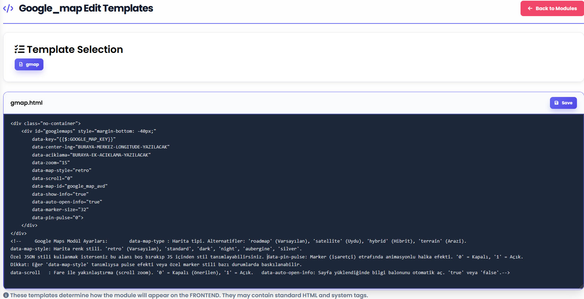

Websistem v1.0 – Kullanım Rehberi (Usage)
Bu doküman, Websistem v1.0 yönetim panelini kullanarak sitenizi nasıl yöneteceğinizi açıklar. Teknik detaylara boğulmadan, sistemin ne yaptığı, nereden yönetildiği ve hangi varsayılan davranışlara sahip olduğu anlatılır.
1. Yönetim Paneline Giriş
Standart sayfa girişinde Üye Girişi bağlantısı bulunur.
- Sistem yöneticisi ve site kullanıcıları aynı giriş ekranını kullanır.
- Yetkiler, giriş yapan kullanıcının rolüne göre otomatik olarak belirlenir.
Yönetici Girişi
- Kullanıcı adı ve şifre kurulum sırasında belirlenir.
- Şifre unutulursa, kurulumda tanımlanan e-posta adresine şifre sıfırlama bağlantısı gönderilir.
Yönetici yetkisi olan kullanıcılar tüm sistem ayarlarına erişebilir.
2. Yönetim Paneli Yapısı (Sidebar)
Yönetici olarak giriş yaptıktan sonra, sol tarafta Sidebar (Yan Menü) görüntülenir. Tüm işlemler bu menü üzerinden yapılır.
Sidebar Ana Bölümleri
- Düzenle: Sayfalar, Sekmeler, Menüler, Bloklar
- Resimler
- Dosyalar
- Modüller
- Üyeler
- Temalar
- Genel Ayarlar
- Çıkış
3. İçerik Yönetim Katmanı (Kavramsal)
Sistem içeriği; sayfalar, sekme tabanlı bölümler ve anasayfa blokları üzerinden yapılandırır.
- İçerik, sayfalar ve sekmeler aracılığıyla düzenlenir.
- Bloklar ile anasayfayı baştan sonra dizayn edebilir, genişletebilir veya daraltabilirsiniz.
- Her sayfa başlık, içerik, meta bilgiler ve galeri alanlarına sahiptir.
- Sekmeler; sayfaları gruplamak ve kategori benzeri yapılar oluşturmak için kullanılır.
- Menüler, bu içerik yapılarına bağlanarak navigasyonu oluşturur.
Bu katman sayesinde; blog, kurumsal site, portfolyo veya ürün kataloğu gibi farklı yapıdaki projeler aynı çekirdek üzerinde rahatça inşa edilebilir.
4. Düzenle Menüsü
4.1 Sayfalar
- Yeni sayfa oluşturulabilir.
- Sayfalar sıralanabilir.
- Yayına alınabilir veya yayından kaldırılabilir.
- Silme işlemi geri alınamaz (silmek için iki adımlı onay gerekir).
- Sayfalar isteğe bağlı olarak bir sekmeye bağlanabilir.
- Her sayfaya özel: içerik, başlık ve görsel galerisi eklenebilir.
Bu bölüm, metin içeriklerinizi ve makalelerinizi yayınlamak için temel alandır.
4.2 Sekmeler
Sekmeler, sayfaları gruplamak için kullanılır.
- Yeni sekme oluşturulabilir.
- Sekmeler aktif/pasif yapılabilir veya silinebilir.
- Tek sayfalık web siteleri için zorunlu değildir.
Makaleleri veya sayfaları konuya göre kategorilere ayırmak için idealdir.
4.3 Menüler
Menüler, sitenin üst (header) navigasyonunu yönetir. Menü öğeleri üç kaynaktan oluşturulabilir:
- Sayfalar
- Sekmeler
- Özel başlık + URL
- Sürükle-bırak ile sıralama
- İç içe (nested) menü yapıları
- Aktif / pasif durumlar
Tema ile Menü İlişkisi
Menünün görünümü, aktif temanın menu.html şablonuna bağlıdır.
- Eğer menü şablonunda
data-dynamictanımı varsa, menü dinamik olarak üretilir. - Aksi halde,
menu.htmliçine yazılan HTML aynen kullanılır.
<nav data-dynamic="1">
<!-- Menü elemanları yönetim panelinden gelir -->
</nav>
Statik menü kullanmak isterseniz, menu.html içine istediğiniz HTML yapısını
yazabilirsiniz. Dinamik menü istiyorsanız, aynı şablonda en az bir kapsayıcıya
data-dynamic="1" özelliğini eklemeniz yeterlidir; yapılandırmaya göre menü otomatik
doldurulur.
4.4 Bloklar (Anasayfa Yapısı)
Bloklar, anasayfayı oluşturan temel parçalardır. Her blok bir HTML içeriğidir, veritabanına kaydedilir ve anasayfada sıralanabilir.
Bloklar, ana sayfadaki header ve footer bölümleri hariç tüm orta alanın yapısını belirler. Tamamı HTML tabanlıdır; etkili kullanım için temel HTML bilgisi gerekir.
Blok Durumları
- Yayında → Yeşil bayrak
- Yayında değil → Kırmızı bayrak
- Aktif
- Pasif
(Bu bayraklar aynı zamanda tıklanabilir toggle butonudur)
5. Resimler ve Dosyalar
Resimler
Güvenli resim dosyaları bu alanda saklanır. Her resimde: "Yeni sekmede aç", "Dosya adını kopyala" ve "Sil" ikonları bulunur. Sayfa ve profil görselleri bu alandan seçilir.
JPG, PNG, WEBP ve GIF uzantılı görseller desteklenir. Liste üzerindeki bağlantıya tıkladığınızda, adres panoya kopyalanır ve doğrudan içerik alanına Ctrl + V ile yapıştırabilirsiniz.
Dosyalar
Güvenli uzantılı dosyalar (PDF, DOC vb.) için ayrı alan bulunur. Sistem, dosya ve resimleri otomatik olarak ayırır.
6. Modüller
6.1 Modül Yönetimi
- Sisteme ekli tüm modüller listelenir.
- Modüller aktif/pasif yapılabilir.
- Yeni modül eklenebilir.
- Modül şablonları düzenlenebilir.
6.2 Modül Kullanımı
Modüller, sayfa veya blok içerisine kısa bir kod ile eklenir:
[al:modul:modul_adi]Yönetim panelindeki Modüller bölümünde her modül için bir kopyala butonu bulunur. Bu butona tıkladığınızda kısa kod panoya kopyalanır ve sayfa ya da blok içeriğine yapıştırıldığında otomatik olarak çalışır.
[al:modul:contact-form]6.3 Modül Şablonları
- Modül şablonları HTML ile düzenlenir.
- Her modül, kendi şablon dosyalarına sahiptir.
- Bu şablonlar üzerinden modülün ön yüzdeki görünümü kontrol edilir.
Örnek bir modül şablonu düzenleme ekranı:

Modül şablonlarında hazır değişken alanları bulunur.
Bu alanlar modül tarafından otomatik olarak sağlanır.
Bu bölümde yeni değişken tanımlanmaz.
Sadece modülün sunduğu hazır alanlar kullanılır.
Bazı modüller, harici servisler için gerekli olan API anahtarlarını sistem ayarları üzerinden alır (örneğin Google Maps veya Tawk.to).
Bu anahtarlar yalnızca değer olarak girilir ve modül tarafından otomatik olarak kullanılır. Bu nedenle çoğu durumda yalnızca HTML düzenlemesi yeterlidir.
7. Üyeler
- Üye listesi görüntülenebilir.
- Yeni üye oluşturulabilir.
- Mevcut üyeler düzenlenebilir.
- Yetkilere göre erişim seviyesi belirlenir.
Sistem içerisinde yerleşik bir üyelik ve yetkilendirme yapısı bulunur. Farklı rollerle yeni üyelikler tanımlayabilir, yönetim paneline erişim seviyesini kontrol edebilirsiniz.
8. Temalar
Sisteme ekli temalar listelenir ve aktif tema değiştirilebilir.
Tema Değiştirildiğinde
- İçerikler silinmez.
- Sistem, tema ile uyumlu örnek blokları yüklemek isteyip istemediğinizi sorar.
Örnek bloklar yüklendiğinde, mevcut anasayfa blokları değiştirilir.
Temalar düzenlenebilir, kopyalanabilir veya sıfırdan oluşturulabilir. Tema dosyaları HTML, CSS ve JavaScript sayfalarından oluşur; hem anasayfa hem de iç sayfaların yapısını buradan özelleştirebilirsiniz.
Tema düzenleme ekranında header, footer ve index.html gibi
alanlara erişerek sitenin genel iskeletini yeniden tanımlayabilirsiniz.
9. Dil ve Çeviri Sistemi
Websistem, çoklu dil desteğine sahiptir.
Yönetim Paneli Çevirileri
Diller listelenebilir, aktif/pasif yapılabilir. Çeviriler manuel veya AI destekli oluşturulabilir (API anahtarı gerektirir).
Şablonlarda Çeviri Kullanımı
Genel arayüz metinleri, orta nokta (middle-dot) kullanılarak işaretlenir:
·Çıkış Yap·
<div>·Welcome to our site·</div>Bu yapı aktif dile göre otomatik çevrilir.
10. Genel Ayarlar
Site adı, yönetici e-posta adresi, meta description ve keywords gibi temel bilgiler buradan yönetilir.
11. Varsayılan Davranışlar ve Uyarılar
- Silinen öğeler geri alınamaz.
- Yayından kaldırma ≠ silme.
- Bazı işlemler loglanır, ancak her işlem geri döndürülebilir değildir.
- Modül klasörleri fiziksel olarak silinmediği sürece tekrar etkinleştirilebilir.